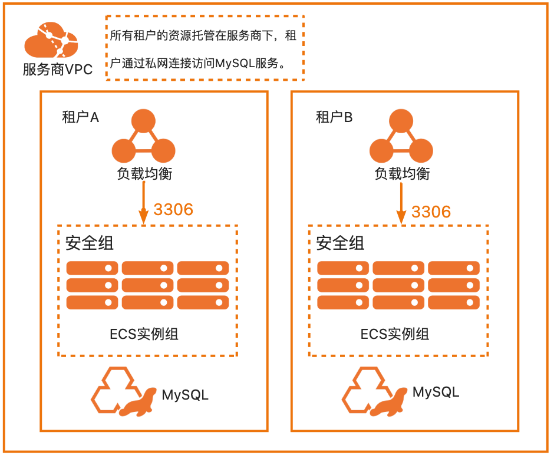

服务模板说明文档
服务说明
本文介绍基于MySQL软件包快速构建托管版单租户计算巢服务，关于计算巢托管版可以参考帮助文档， 本示例采用ECS+SLB的架构，默认支持私网打通、网络变配与磁盘扩容功能。用户部署服务实例后，可以直接通过内网访问部署在服务商的MySQL，除此之外还配置了三种套餐，分别为：
| 套餐名 | SLB规格 | ECS规格族 | vCPU与内存 | 系统盘 | 公网带宽 |
|---|---|---|---|---|---|
| 低配版 | slb.s1.small | ecs.c6.large | 内存型c6，2vCPU 4GiB | ESSD云盘 200GiB PL0 | 固定带宽1Mbps |
| 基础版 | slb.s1.small | ecs.c6.xlarge | 内存型c6，4vCPU 8GiB | ESSD云盘 200GiB PL0 | 固定带宽1Mbps |
| 高配版 | slb.s3.small | ecs.c6.2xlarge | 内存型c6，4vCPU 8GiB | ESSD云盘 200GiB PL0 | 固定带宽1Mbps |
本示例对应的Git仓库地址：mysql-managed-demo
本示例会自动的构建计算巢服务，具体的服务构建流程为:
- 将MySQL安装包（提前存放到该github repo中）构建为计算巢文件部署物
- 创建计算巢服务并关联文件部署物
创建过程大约持续3分钟，当服务变成待提交后构建成功。
部署架构
本部署架构为SLB+ECS，安全组开放3306端口，并配置了终端节点。 
服务构建计费说明
测试本服务构建无需任何费用，创建服务实例涉及的费用参考服务实例计费说明。
RAM账号所需权限
本服务需要对ECS、VPC等资源进行访问和创建操作，若您使用RAM用户创建服务实例，需要在创建服务实例前，对使用的RAM用户的账号添加相应资源的权限。添加RAM权限的详细操作，请参见为RAM用户授权 。所需权限如下表所示。
| 权限策略名称 | 备注 |
|---|---|
| AliyunECSFullAccess | 管理云服务器服务（ECS）的权限 |
| AliyunVPCFullAccess | 管理专有网络（VPC）的权限 |
| AliyunROSFullAccess | 管理资源编排服务（ROS）的权限 |
| AliyunComputeNestUserFullAccess | 管理计算巢服务（ComputeNest）的用户侧权限 |
| AliyunComputeNestSupplierFullAccess | 管理计算巢服务（ComputeNest）的服务商侧权限 |
| AliyunPrivateLinkFullAccess | 管理私网连接（PrivateLink）的权限 |
服务实例计费说明
测试本服务在计算巢上的费用主要涉及：
- 所选vCPU与内存规格
- 系统盘类型及容量
- 公网带宽
- 私网连接费用
计费方式包括：
- 按量付费（小时）
- 包年包月
目前提供如下套餐：
| 套餐名 | SLB规格 | ECS规格族 | vCPU与内存 | 系统盘 | 公网带宽 |
|---|---|---|---|---|---|
| 低配版 | slb.s1.small | ecs.c6.large | 内存型c6，2vCPU 4GiB | ESSD云盘 200GiB PL0 | 固定带宽1Mbps |
| 基础版 | slb.s1.small | ecs.c6.xlarge | 内存型c6，4vCPU 8GiB | ESSD云盘 200GiB PL0 | 固定带宽1Mbps |
| 高配版 | slb.s3.small | ecs.c6.2xlarge | 内存型c6，4vCPU 8GiB | ESSD云盘 200GiB PL0 | 固定带宽1Mbps |
预估费用在创建实例时可实时看到。私网连接只有在创建服务时候并建立连接后才会计费，具体的计费方式可以参考：https://help.aliyun.com/document_detail/198081.html?spm=a2c4g.120462.0.0.5f104bffA7i9WJ
部署流程
部署参数说明
| 参数族 | 参数项 | 说明 |
|---|---|---|
| 基础配置 | 数据库root和admin账户密码 | 数据库root和admin账户密码，长度8-32个字符，可包含大小字母、数字及特殊符号（包含：!@#$%^&*-+=_）。 |
| 网络配置 | 可用区 | 选择可用区，资源将在服务商的该可用区创建。 |
| 网络设置 | 专有网络 | 选择建立私网连接的VPC。 |
| 网络设置 | 安全组 | 选择建立私网连接的安全组。 |
| 网络设置 | 交换机和可用区 | 选择建立私网连接的可用区与交换机。 |
部署步骤
- 部署链接

- 单击部署链接，进入服务实例部署界面，根据界面提示，填写参数完成部署。
 网络设置部分如果填写网络信息，私网连接的终端节点将在该可用区创建。
网络设置部分如果填写网络信息，私网连接的终端节点将在该可用区创建。
注：由于本服务开启了网络变配功能，若此处不开启私网连接，也可通过变配功能开启。详情见变配流程-变配私网连接。
 2. 参数填写完成后点击下一步：确认订单确认参数。
2. 参数填写完成后点击下一步：确认订单确认参数。
 3. 确认订单完成后同意服务协议并点击立即创建，随后进入部署阶段。
3. 确认订单完成后同意服务协议并点击立即创建，随后进入部署阶段。

 4. 等待部署完成后就可以开始使用服务。
4. 等待部署完成后就可以开始使用服务。
 5. 使用服务
1. 本服务支持私网访问，租户可以通过PrivateLink实现私网访问（私网访问帮助文档），
租户私网访问流程：
1. 在服务实例的虚拟互联网页签中查看详细信息，连接时可以通过自定义域名（如果在创建服务实例时勾选了的话）、IP地址或者可用区域名进行访问。
5. 使用服务
1. 本服务支持私网访问，租户可以通过PrivateLink实现私网访问（私网访问帮助文档），
租户私网访问流程：
1. 在服务实例的虚拟互联网页签中查看详细信息，连接时可以通过自定义域名（如果在创建服务实例时勾选了的话）、IP地址或者可用区域名进行访问。
 2. 在对应的vsw中创建ECS，创建好后安装mysql客户端。
2. 在对应的vsw中创建ECS，创建好后安装mysql客户端。
yum install mysql
or
apt install mysql-client
3. 在该ECS中连接MySQL，下面展示分别用自定义域名、IP与可用区域名进行连接：
1. 自定义域名方式访问：

2. 通过IP访问：

3. 通过可用区域名访问：

- 本服务支持修改服务配置参数。请注意，修改参数会引起服务重启。修改服务参数的流程：
- 进入服务实例详情：

- 点击修改参数，编辑修改值，完成后点击保存。

- 点击保存后，服务实例会进入参数更新流程，大致需要1~2分钟，请耐心等待。

- 参数更新流程完成后，参数生效。

- 进入服务实例详情：
变配流程
说明
本服务默认开启支持变配私网连接、支持数据盘扩容。
私网连接变配：用户可以通过变配开启/关闭/新增/删除私网连接；
数据盘扩容：用户可通过变配扩容数据盘容量。
变配私网连接步骤
- 前提说明：本变配示例为用户在创建服务实例时未开启私网连接，在服务实例创建完成后需要开启。
 用户已有服务实例未开启私网连接。
用户已有服务实例未开启私网连接。

- 点击右上角 修改配置 进入变配服务实例页面，选择网络变配。

- 点击下一步进入设置修改参数，添加私网连接参数。

 注意：请确保填入的安全组入方向开启3306端口，否则私网访问将无法连接。
注意：请确保填入的安全组入方向开启3306端口，否则私网访问将无法连接。 - 点击下一步预览变配内容。

- 点击确定开始执行变配，等待变配完成。

- 变配完成，服务实例状态变为已部署，进入网络配置可见新增的私网连接信息。之后便可通过部署流程步骤5所述完成连接。
 后续若需要关闭/新增/删除私网访问等其他操作，同样可以通过修改配置-网络变配完成。
后续若需要关闭/新增/删除私网访问等其他操作，同样可以通过修改配置-网络变配完成。
磁盘容量扩容步骤
- 前提说明
- 本变配示例为用户扩容磁盘容量，服务模板中将"扩容磁盘容量"变配类型设置为升配，即仅能扩容；
- 为使磁盘可变配与脚本可执行，服务模板中资源EcsInstanceGroup参数UpdatePolicy需设置为ForAllInstances，资源RunCommand参数Sync需设置为true。 以上参数模板中均已配置好，此处仅告知。
- 点击右上角 修改配置 进入变配服务实例页面，选择磁盘容量扩容。

- 点击下一步进入设置修改参数，将原有磁盘容量从200GB修改为400GB。

- 点击下一步预览变配参数。

- 点击确定开始执行变配，等待变配完成。
- 变配完成，服务实例状态变为已部署。
-
查看结果：进入服务端ECS 通过命令 df -h 查看，磁盘容量已修改:
变配前：
 变配后：
变配后：

服务详细说明
本文提前将MySQL社区版安装包存放到该Github Repo中，构建服务过程中会将该安装包发布为计算巢部署物，并在ROS模板写入安装指令，ROS模板引擎在执行时便会自动执行安装了。
wget '{{ computenest::file::MySQL }}' -O mysql-community-release-el6-5.noarch.rpm
rpm -ivh mysql-community-release-el6-5.noarch.rpm
yum repolist all | grep mysql
yum install mysql-community-server -y
{{ computenest::file::MySQL }} 为占位符，会由计算巢服务替换成文件部署物MySQL的http下载地址。
文件说明
| 文件路径 | 说明 |
|---|---|
| config.yaml | 构建服务的配置文件，服务构建过程中会使用计算巢命令行工具computenest-cli，computenest-cli会基于该配置文件构建服务。 |
| parameters.yaml | 本服务为托管版单租，使用该文件渲染服务商需要配置的网络参数，包括VpcId，VSwitch等。 |
| artifact/mysql-community-release-el6-5.noarch.rpm | MySQL社区版安装包，构建过程会将该包发布为计算巢部署物。 |
| icons/service_logo.jpg | 构建服务默认的图标。 |
| templates/parameters.yaml | 本服务为托管版单租服务，所以只需要用户填写一部分参数，通过该文件指定用户所填参数。 |
| templates/template.yaml | ROS模板文件，ROS模板引擎根据该模板能够自动创建出所有的资源。 |
templates/template.yaml主要由三部分组成
- Parameters定义需要用户填写的参数，包括付费类型，实例规格和实例密码可用区参数。
ZoneId:
Type: String
AssociationProperty: ALIYUN::ECS::Instance:ZoneId
Label:
en: VSwitch Available Zone
zh-cn: 可用区
# 数据库root账户密码
Password:
# 查询该参数时只输出星号（*）
NoEcho: true
Type: String
Description:
en: 'Database root account passwor, 8-32 characters, including uppercase and lowercase letters, numbers and special symbols (including: !@#$%^&*-+=_).'
zh-cn: 数据库root账户密码，长度8-32个字符，可包含大小字母、数字及特殊符号（包含：!@#$%^&*-+=_）。
Label:
en: Root Account Password
zh-cn: 数据库root账户密码
ConstraintDescription:
en: '8-32 characters, including uppercase and lowercase letters, numbers and special symbols (including: !@#$%^&*-+=_).'
zh-cn: 8-32个字符，可包含大小字母、数字及特殊符号（包含：!@#$%^&*-+=_）。
MinLength: '8'
MaxLength: '32'
AssociationProperty: ALIYUN::ECS::Instance::Password
# 专有网络VPC实例ID
VpcId:
AssociationProperty: ALIYUN::ECS::VPC::VPCId
Type: String
Label:
en: VPC ID
zh-cn: 专有网络VPC实例ID
# 交换机实例ID
VSwitchId:
AssociationProperty: ALIYUN::ECS::VSwitch::VSwitchId
AssociationPropertyMetadata:
VpcId: ${VpcId}
ZoneId: ${ZoneId}
Type: String
Label:
en: VSwitch ID
zh-cn: 交换机实例ID
# 数据盘大小
DataDiskSize:
Description:
zh-cn: ECS实例数据盘大小，单位为GiB。取值范围：100~32768
en: 'ECS Instance disk size, range of values: 100-32768, units: GB'
Default: 200
MaxValue: 32768
MinValue: 100
Label:
zh-cn: 数据盘空间
en: Data Disk Space
Type: Number
# Ecs实例类型
EcsInstanceType:
Type: String
Label:
en: Instance Type
zh-cn: Ecs实例类型
AssociationProperty: ALIYUN::ECS::Instance::InstanceType
AllowedValues:
- ecs.c6.large
- ecs.c6.xlarge
- ecs.c6.2xlarge
- ecs.c6.4xlarge
SlbInstanceType:
Type: String
Label:
en: Instance Type
zh-cn: Slb实例类型
AssociationProperty: ALIYUN::Slb::LoadBalance::LoadBalancerSpec
AllowedValues:
- slb.s1.small
- slb.s3.small
- Resources定义需要开的资源，包括新开的Vpc,、VSwitch、ECS、Slb实例、私网连接。
EcsSecurityGroup:
Type: 'ALIYUN::ECS::SecurityGroup'
Properties:
VpcId:
Ref: VpcId
SecurityGroupIngress:
- Priority: 1
PortRange: 3306/3306
NicType: internet
SourceCidrIp: 0.0.0.0/0
IpProtocol: tcp
# Ecs实例
EcsInstanceGroup:
Type: ALIYUN::ECS::InstanceGroup
Properties:
# I/O优化实例
IoOptimized: optimized
ZoneId:
Ref: ZoneId
DiskMappings:
- Category: cloud_essd
Device: /dev/xvdb
Size:
Ref: DataDiskSize
SystemDiskSize: 40
# 付费方式：按量付费
InstanceChargeType: PostPaid
MaxAmount: 1
# 系统盘类型：cloud_essd
SystemDiskCategory: cloud_essd
# 实例名称
InstanceName:
Ref: ALIYUN::StackName
VpcId:
Ref: VpcId
SecurityGroupId:
Ref: EcsSecurityGroup
VSwitchId:
Ref: VSwitchId
# 指定CentOS 7.9镜像，如果修改镜像，UserData脚本需要进行适配
ImageId: "centos_7_9_x64_20G_alibase_20220727.vhd"
InstanceType:
Ref: EcsInstanceType
# 主机名
HostName:
Ref: ALIYUN::StackName
# Ecs登录密码
Password:
Ref: Password
# 是否为实例分配公网IP
AllocatePublicIP: true
InternetMaxBandwidthOut: 1
# ECS执行脚本
RunCommand:
Type: ALIYUN::ECS::RunCommand
Properties:
CommandContent:
Fn::Sub:
- |
#!/bin/sh
FLAG_FILE="/root/.disk_initialized"
PARTITION=/dev/vdb1
MOUNT_POINT=/data1
initialize_disk() {
# 初始化数据盘，对数据盘分区
cat >> /root/InitDataDisk.sh << EOF
#!/bin/bash
echo "p
n
p
w
" | fdisk -u /dev/vdb
EOF
/bin/bash /root/InitDataDisk.sh
rm -f /root/InitDataDisk.sh
rm -f InitDataDisk.sh
# 在新分区上创建文件系统
mkfs.ext4 /dev/vdb1
# 创建目录，MySQL将安装在该目录下
mkdir /data1
# 挂载文件系统
mount /dev/vdb1 /data1
# 向 /etc/fstab 写入新分区信息
echo /dev/vdb1 /data1 ext4 defaults,nodelalloc,noatime 0 2 >> /etc/fstab
}
install_mysql() {
# 安装社区版MySQL
cd /data1/
wget '{{ computenest::file::MySQL }}' -O mysql-community-release-el6-5.noarch.rpm
rpm -ivh mysql-community-release-el6-5.noarch.rpm
yum repolist all | grep mysql
yum install mysql-community-server -y
# 启动MySQL服务
service mysqld start
}
configure_mysql() {
# 以超级用户身份登入，创建admin用户，并允许admin用户以Password为密码远程登录
mysqladmin -u root password '${Password}'
echo "create database test character set utf8 collate utf8_bin;" > ./test.sql
echo "CREATE USER 'admin'@'%' IDENTIFIED BY '${Password}';" >> ./test.sql
echo "GRANT ALL PRIVILEGES ON *.* TO 'admin'@'%' WITH GRANT OPTION;" >> ./test.sql
mysql -u root -p'${Password}' < ./test.sql
}
move_mysql_data() {
# 将MySQL的配置和数据路径移动到数据盘上
systemctl stop mysqld
rsync -av /var/lib/mysql /data1
# 修改配置文件
sed -i 's/\/var\/lib/\/data1/g' /etc/my.cnf
echo -e '\n' >> /etc/my.cnf
echo '[client]' >> /etc/my.cnf
echo 'port=3306' >> /etc/my.cnf
echo 'socket=/data1/mysql/mysql.sock' >> /etc/my.cnf
# 重启MySQL
systemctl start mysqld
}
expand_partition() {
# 使用 growpart 扩展分区
echo "Expanding partition..."
if ! growpart /dev/vdb 1; then
echo "Failed to expand partition"
exit 1
fi
# 通知系统分区的更改
partprobe $PARTITION
# 使用 e2fsck 检查文件系统
echo "Checking filesystem..."
e2fsck -f -y $PARTITION
# 扩展文件系统
echo "Resizing filesystem..."
resize2fs $PARTITION
}
if [ ! -f "$FLAG_FILE" ]; then
# 首次创建ECS时执行
# 确保网络就绪
sleep 15
initialize_disk
install_mysql
configure_mysql
move_mysql_data
# 当初始化完成后，创建一个标志文件
touch "$FLAG_FILE"
echo "Initialization complete. Flag file created."
# 执行成功回调WaitCondition结束WaitCondition的等待
${CurlCli} -d "{\"Data\" : \"SUCCESS\", \"Status\" : \"SUCCESS\"}"
else
# 扩容数据盘时执行
# 停止MySQL服务
systemctl stop mysqld
# 检查并确保分区未被挂载
if mountpoint -q $MOUNT_POINT; then
umount $MOUNT_POINT
fi
expand_partition
# 重新挂载分区
echo "Remounting partition..."
mount $PARTITION $MOUNT_POINT
# 启动MySQL服务
systemctl start mysqld
fi
# 获取到WaitConditionHandle的地址放到 ${CurlCli}变量里
- CurlCli:
Fn::GetAtt:
- WaitConditionHandle
- CurlCli
# 数据库root账户密码
Password:
Ref: Password
Type: RunShellScript
Timeout: 900
Sync: true
InstanceIds:
- Ref: EcsInstanceGroup
Slb:
Type: ALIYUN::SLB::LoadBalancer
Properties:
LoadBalancerName:
Fn::Join:
- '-'
- - mysql
- Ref: ALIYUN::StackName
VpcId:
Ref: VpcId
VSwitchId:
Ref: VSwitchId
PayType: PayOnDemand
AddressType: intranet
LoadBalancerSpec:
Ref: SlbInstanceType
SupportPrivateLink: true
SlbBackendServerAttachment:
DependsOn:
- EcsInstanceGroup
Type: ALIYUN::SLB::BackendServerAttachment
Properties:
BackendServerList:
Fn::GetAtt:
- EcsInstanceGroup
- InstanceIds
LoadBalancerId:
Ref: Slb
BackendServerWeightList:
- 100
- 0
SlbListener:
DependsOn: Slb
Type: ALIYUN::SLB::Listener
Properties:
Persistence:
CookieTimeout: 60
StickySession: 'on'
PersistenceTimeout: 180
XForwardedFor: 'off'
StickySessionType: insert
ListenerPort: 3306
Bandwidth: -1
HealthCheck:
HttpCode: http_2xx,http_3xx,http_4xx,http_5xx
HealthCheckType: tcp
UnhealthyThreshold: 3
Timeout: 5
HealthyThreshold: 3
Port: 3306
URI: /
Interval: 2
LoadBalancerId:
Ref: Slb
BackendServerPort: 3306
Protocol: tcp
VpcEndpointService:
DependsOn: Slb
Type: ALIYUN::PrivateLink::VpcEndpointService
Properties:
ServiceDescription: isv service
Resource:
- ZoneId:
Ref: ZoneId
ResourceId:
Ref: Slb
ResourceType: slb
AutoAcceptEnabled: true
- Outputs定义需要最终在计算巢概览页中对用户展示的输出
Outputs:
EndpointServiceId:
Description:
en: EndpointService Id
zh-cn: 终端节点服务Id
Value:
Fn::GetAtt:
- VpcEndpointService
- ServiceId
Endpoint:
Value:
Fn::Join:
- ''
- - Ref: ALIYUN::StackName
- .mysql.com
MysqlUserName:
Description:
en: MySQL User Name
zh-cn: MySQL登录用户名
Value: admin